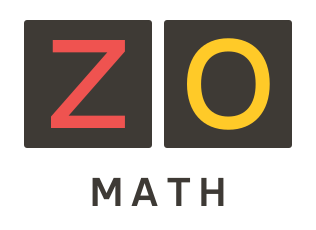

Ôn thi Toán THPT 2027
Tài liệu tự học miễn phí dành cho học sinh ôn tập môn Toán: hiểu kiến thức, giải vấn đề và chuẩn bị cho kì thi tốt nghiệp THPT.
Đếm ngược ngày thi
Học cách nghĩ trước một bài toán
Đọc một lời giải, em có thể hiểu từng bước. Nhưng khi đề bài thay đổi, làm thế nào để tự tìm được cách giải? Khóa Ôn thi Toán THPT 2027 của ZO Math giúp em rèn khả năng ấy từ việc hiểu kiến thức và điều kiện sử dụng.
Em được dẫn dắt bằng những câu hỏi: dữ kiện cho biết điều gì, vì sao có thể kết luận như vậy, nếu thay một điều kiện thì điều gì sẽ xảy ra? Công thức, bảng và hình được đặt trong mối liên hệ để em có cơ sở lựa chọn cách làm và giải thích suy nghĩ của mình.
Chính bài làm của em sẽ chỉ ra phần cần học tiếp. Một lỗi sai giúp em nhận ra điều chưa hiểu; một bài tự giải sau khi sửa giúp em kiểm chứng sự tiến bộ. Qua từng chủ đề, em dần biết mình đã làm được gì, cần ôn gì và chủ động chuẩn bị cho kì thi.
Video công bố lúc 20:30 ngày 16/10/2026 (giờ Việt Nam).
Giới thiệu khóa học · 4 phút 11 giây · Xem trên YouTube
Dành cho ai?
Mọi học sinh chuẩn bị thi tốt nghiệp THPT 2027. Học liệu tự học được chia sẻ miễn phí.
Nội dung chương trình
Khóa học ôn tập kiến thức Toán lớp 10–12 theo tám mạch dưới đây, từ các khái niệm và phương pháp cơ bản đến bài toán vận dụng, tổng hợp.
Hàm số, đạo hàm và đồ thị
Em học ý nghĩa và cách tính đạo hàm, dùng đạo hàm để xét hàm số tăng, giảm, tìm cực trị và giá trị lớn nhất, nhỏ nhất trên một tập cho trước. Kết hợp với giới hạn, em xác định tiệm cận, khảo sát và vẽ đồ thị; vận dụng để giải bài toán về tốc độ thay đổi và tối ưu.
Thống kê và đọc dữ liệu
Em học cách chọn số trung bình, trung vị hoặc mốt để mô tả giá trị đại diện, và dùng các số đo độ phân tán để biết số liệu tập trung hay trải rộng. Với bảng, biểu đồ và số liệu ghép nhóm, em tính toán, so sánh các nhóm và giải thích kết quả, đồng thời nhận ra dữ liệu bất hợp lí và giới hạn của kết luận.
Hình học, vectơ và tọa độ
Em học cách giải tam giác, chứng minh các quan hệ song song, vuông góc và tính góc, khoảng cách, diện tích, thể tích. Vectơ và tọa độ giúp chuyển bài hình thành phép tính hoặc phương trình. Em học cách biểu diễn và giải bài toán về đường thẳng, đường tròn, elip, hypebol, parabol trong mặt phẳng; đường thẳng, mặt phẳng và mặt cầu trong không gian.
Đếm và xác suất
Em học cách đếm số cách chọn, sắp xếp và các kết quả có thể xảy ra của một phép thử. Các quy tắc cộng, nhân xác suất giúp giải bài toán có nhiều biến cố, với sự phân biệt rõ giữa xung khắc và độc lập. Em cũng học cách tính xác suất khi biết thêm thông tin, dùng bảng số liệu, sơ đồ cây, công thức xác suất toàn phần và Bayes.
Dãy số, mũ và lôgarit
Em học cách mô tả dãy số, tính số hạng và tổng của cấp số cộng, cấp số nhân, rồi tìm hiểu giới hạn của dãy. Phần mũ và lôgarit giúp hiểu sự tăng, giảm theo tỉ lệ và cách tìm số mũ khi biết cơ số và giá trị của lũy thừa. Em đọc đồ thị, giải phương trình và bất phương trình để tính các đại lượng hoặc thời gian đạt một giá trị cho trước.
Hàm số lượng giác và phương trình lượng giác
Em dùng đường tròn lượng giác để hiểu góc quay, các giá trị sin, cos, tan, cot và những công thức liên hệ giữa chúng. Em học đồ thị, tính tuần hoàn của các hàm lượng giác, tìm đầy đủ nghiệm của phương trình cơ bản và chọn nghiệm theo điều kiện. Kiến thức này giúp giải bài toán về góc, chuyển động và những hiện tượng lặp lại theo chu kì.
Nguyên hàm, tích phân và ứng dụng
Em học cách tìm một hàm số khi biết đạo hàm của nó và dùng điều kiện đã cho để xác định hàm cần tìm. Với tích phân, em tính lượng tích lũy trong một khoảng, chẳng hạn tính quãng đường khi biết vận tốc theo thời gian; đồng thời tính diện tích hình phẳng và thể tích vật thể. Trọng tâm là lập đúng biểu thức và cận tích phân trước khi tính.
Mô hình hóa, tối ưu và bài toán tổng hợp
Em luyện chuyển một tình huống thành bài toán: xác định đại lượng cần tìm, biểu diễn các quan hệ và điều kiện bằng công thức, phương trình hoặc bất phương trình. Trong các bài tổng hợp, em tự chọn và phối hợp kiến thức để giải, chẳng hạn tìm phương án có chi phí thấp nhất hoặc thể tích lớn nhất. Kết quả phải đáp ứng điều kiện và trả lời đúng câu hỏi ban đầu.
Phần Ôn nền giúp em học lại kiến thức cần dùng khi gặp khó khăn trong một chuyên đề.
Lộ trình ôn thi
-
Xác định phần cần ôn
Dựa vào những bài đã làm để nhận ra phần đã vững và phần cần củng cố. Nếu chưa biết bắt đầu từ đâu, em có thể làm Khảo sát đầu vào với những nội dung đã học.
Khảo sát đầu vàoKhảo sát là lựa chọn, không phải điều kiện để mở học liệu.
-
Củng cố kiến thức
Ôn từng chủ đề, làm rõ điều kiện sử dụng kiến thức và luyện những phần chưa vững. Bổ sung kiến thức nền ngay khi cần dùng.
-
Luyện tập tổng hợp
Kết hợp kiến thức từ nhiều chủ đề, tự chọn phương pháp và vận dụng vào những tình huống mới.
-
Luyện đề và chữa lỗi
Làm đề trong thời gian quy định, xem lại cách phân bổ thời gian và những lỗi trong bài. Sau khi chữa, tự làm câu mới để kiểm tra phần vừa sửa.
-
Củng cố trước thi
Ôn những điểm còn yếu và các lỗi thường gặp; luyện cách chọn thứ tự làm bài và phân bổ thời gian trong phòng thi.
Thứ tự và thời lượng ôn được điều chỉnh theo kiến thức đã học, bài làm và thời gian còn lại đến kì thi.
Cách họcHọc trực tiếp cùng ZO Math
Cùng ZO Math phân tích bài làm, làm rõ những bước còn vướng và xác định phần cần học tiếp. Buổi học bắt đầu từ những bài em đã thử và những câu hỏi em muốn giải đáp.
- Trao đổi về bài làm
- Xem lại những bài em đã tự làm và nêu những điều em còn băn khoăn.
- Làm rõ cách suy nghĩ
- Trao đổi về cách em chọn hướng giải và những bước em chưa hiểu.
- Hướng dẫn tự học tiếp
- Xác định phần cần học lại hoặc luyện thêm sau buổi học.
Học trực tiếp là dịch vụ có thu phí, tách biệt với tài liệu tự học miễn phí.
Câu hỏi thường gặp
Nếu còn thiếu kiến thức lớp 10–11 thì sao?
Em không cần ôn lại toàn bộ lớp 10–11 trước khi bắt đầu.
Khi gặp vấn đề cần kiến thức đã quên, hãy ôn đúng phần đó rồi quay lại làm tiếp. Ôn nền trong tài liệu là một nơi để tìm kiếm kiến thức đó. Em có thể dùng những nguồn trợ giúp khác phù hợp với mình.
Nếu kiến thức ấy chưa từng học, cần dành thời gian học trước khi tiếp tục từ chỗ đang vướng.
Có phải làm Khảo sát đầu vào trước khi học không?
Không. Nếu đã biết mình cần ôn chủ đề nào, em có thể mở thẳng tài liệu của chủ đề đó.
Có thể học bằng PDF không?
Trong tài liệu theo chủ đề có mục Tải PDF. Hãy đọc thông báo tại đó trước khi tải: bản PDF có thể chưa chứa những chỉnh sửa mới nhất của trang web.
Khảo sát đầu vào hiện dùng trên trang web.
Có cần trả phí để dùng tài liệu không?
Không. Tài liệu tự học miễn phí. Việc bảo trợ ZO Math là tự nguyện; học trực tiếp là dịch vụ riêng có thu phí.

Bảo trợ ZO Math
Nếu tài liệu hữu ích với bạn, bạn có thể bảo trợ ZO Math tiếp tục biên soạn và chia sẻ.

- Ngân hàng
- Vietcombank
- Số tài khoản
- 0601000137768
- Chủ tài khoản
- Nguyễn Tấn Nhựt
- Nội dung chuyển khoản
- BAO TRO ZO MATH